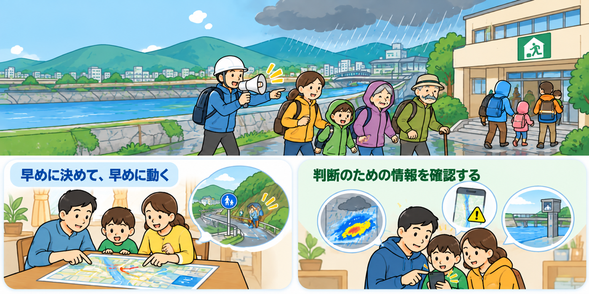

気象庁・キキクル
- 何が分かる
- 土砂災害、浸水害、洪水災害の危険度が、どこで高まっているか
- 避難判断にどう役立つ
- 自宅や避難経路の危険が高まる前に、避難の準備や開始を判断できます。
Step 02
浸水と土砂災害、それぞれの危険度を確認し、早めの避難判断につなげましょう。
一つの情報だけでなく、次の情報を組み合わせて状況をつかみ、危険が高まる前の行動につなげます。
危険度の色、地図上の変化、災害ごとの種類を確認します。
洪水の危険度や避難情報、水位・雨量・カメラなどを確認します。
地域の避難情報や避難場所を確認し、家族で行動につなげます。
危険が高まる前に
自分や家族の状況に合わせ、安全に動けるうちに行動します。
早めの避難判断
「まだ大丈夫」と待ちすぎず、危険が高まる前に早めに避難を判断することが大切です。
避難して何も起きなかったとしても、それは失敗ではありません。一度避難してみることで、避難場所までの道のりや持ち物、避難にかかる時間を確認できます。

雨が強くなってからでは、道路の冠水や土砂災害で移動が難しくなることがあります。安全に動けるうちに避難を決めましょう。